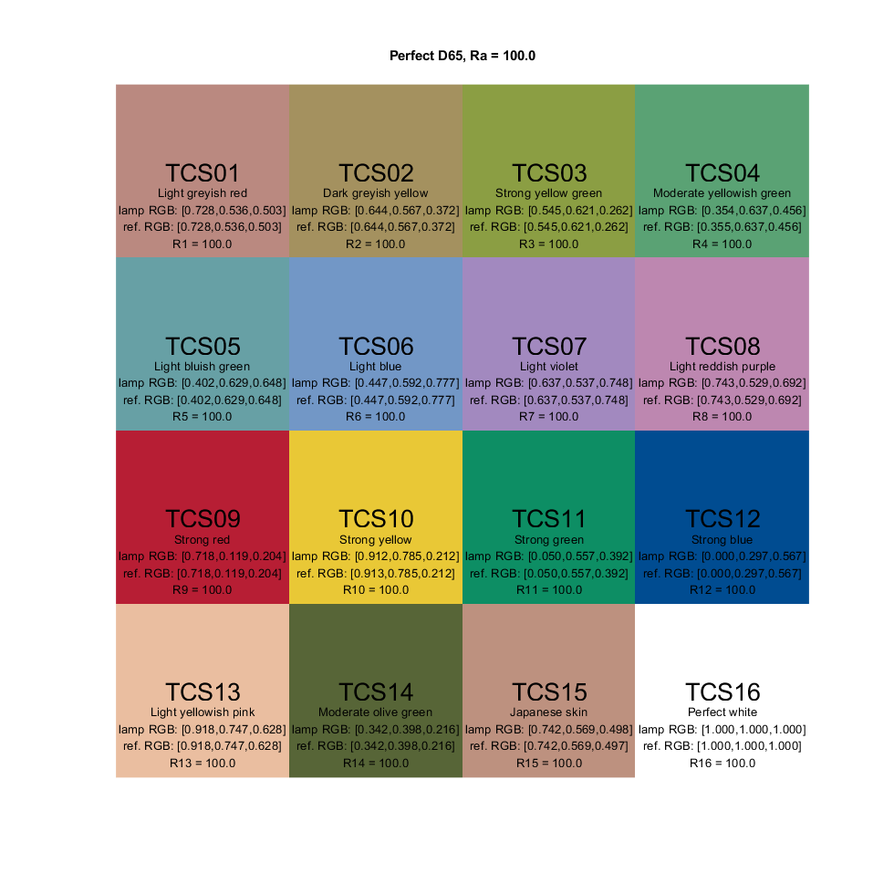
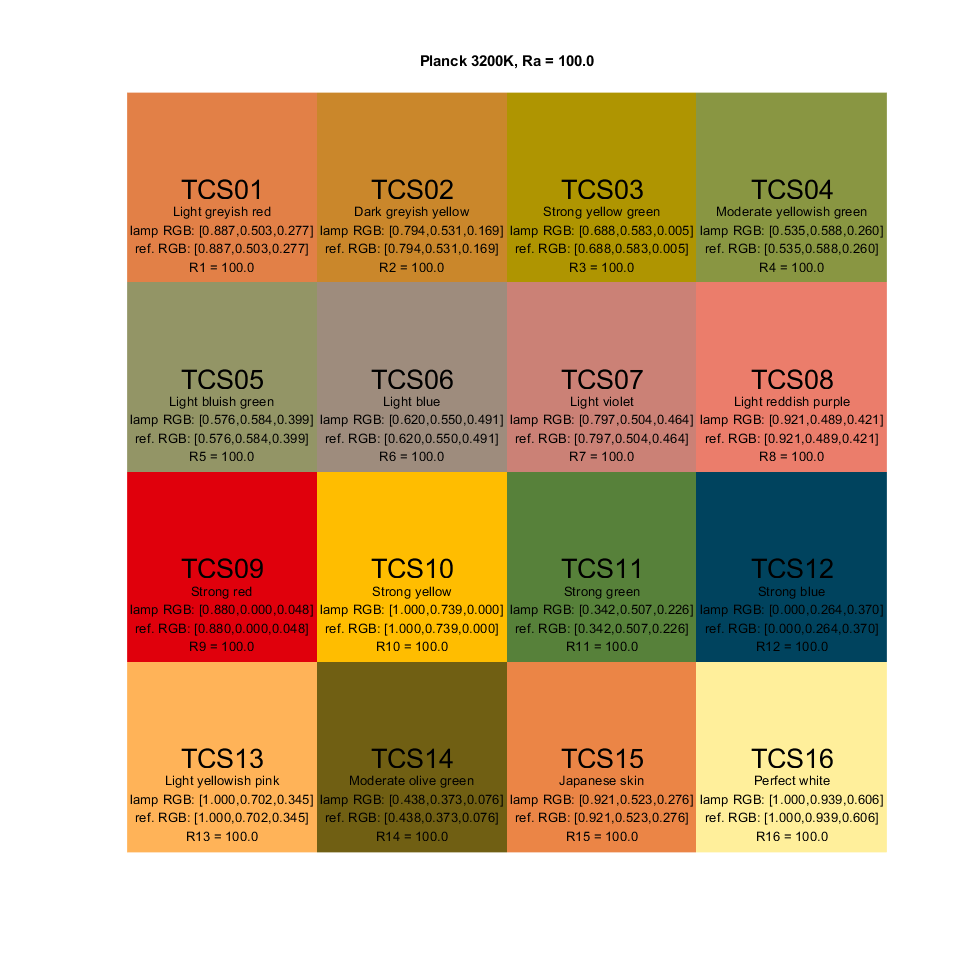
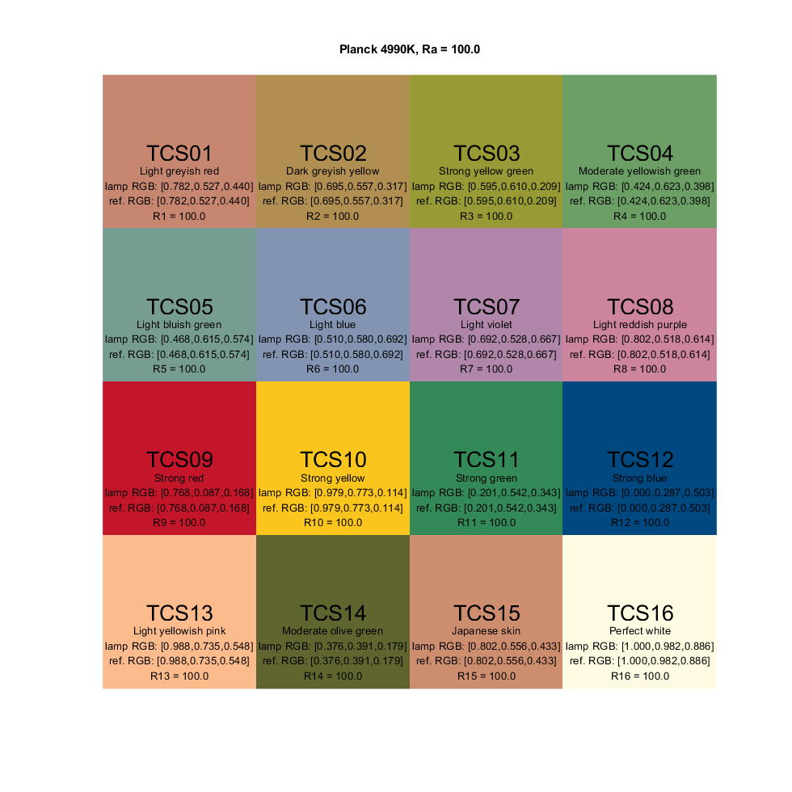
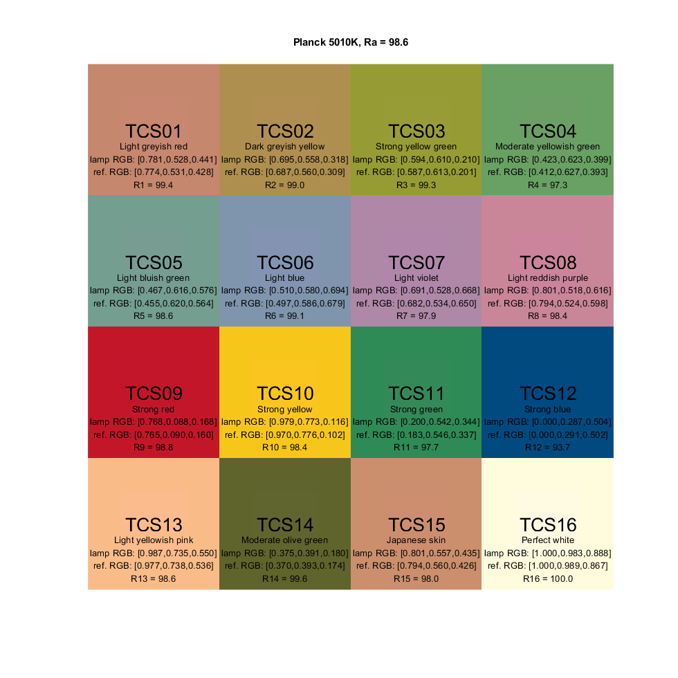

PlotCRIResult
Navigate to: Home | Alphabetic list | Grouped list | Source code: PlotCRIResult.m
Plots a chart to compare CRI colors between test and reference lamp
Contents
Syntax
[refspec, fh] = PlotCRIResult(lamp, opts)
Input Arguments
- lamp: scalar struct. A valid spectrum
- opts: Name-Value pairs
| Name | Type | Value | Meaning |
| 'Figure' | figure handle or positive integer | figure to plot into | |
| 'Title' | string | '' (default) | title of figure |
| 'Pos_x' | positive integer | 10 (default) | horizontal position of figure from left |
| 'Pos_y' | positive integer | 10 (default) | vertical position of figure from bottom |
| 'Width' | positive integer | 980 (default) | width of figure |
| 'Height' | positive integer | 980 (default) | height of figure |
| 'Position' | integer vector of length 4 | [10 10 980 980] (default) | full figure position (see Matlab figure documentation), overrides individual settings |
| 'Background | double vector of length 3 | [0.5 0.5 0.5] (default) | background color (medium gray improves visibility) |
Output Arguments
- refspec: the CRI reference spectrum
- fh: the figure handle
Algorithm
For the lamp spectrum and the reference spectrum, computes the reflected spectra (pairs) for 16 color samples (all 14 standardized CRI spectra, unofficial #15 (asian skin), and 100% perfect white). Determines sRGB values for all reflected spectra using XYZ_to_sRGB. Creates a plot with 4 x 4 square color patches, where the outer frame / the inner square are the colors of the sample under the reference / test lamp. Writes additional information into the patches (name of sample, RGB values, individual Ri). Uses the optional figure parameters or their default values to set figure properties
See also
Usage Example
function ExamplePlotCRIResult() % a perfect lamps to illuminate: D65 PlotCRIResult(CIE_Illuminant_D(6500), 'Title', 'Perfect D65', 'Pos_x', 100, 'Pos_y', 10); % 3200K Planck PlotCRIResult(PlanckSpectrum(360:830,3200), 'Title', 'Planck 3200K', 'Pos_x', 250, 'Pos_y', 10); % 4990K Planck PlotCRIResult(PlanckSpectrum(360:830,4990), 'Title', 'Planck 4990K', 'Pos_x', 400, 'Pos_y', 10); % 5010K Planck: discontinuous PlotCRIResult(PlanckSpectrum(360:830,5010), 'Title', 'Planck 5010K', 'Pos_x', 550, 'Background', [0.94 0.94 0.94]); % 6500K LED PlotCRIResult(ReadLightToolsSpectrumFile('LED_6498K.sre'), 'Title', 'LED 6500K', 'Pos_x', 700); % really bad two line spectrum baaad = MakeSpectrumDirect([461,462,570,571],[40,0,0,58],'XYZ',true); [iCCT, duv] = CCT(baaad); PlotCRIResult(baaad, 'Title', 'really bad blue/yellow two line spectrum', 'Pos_x', 850); end   